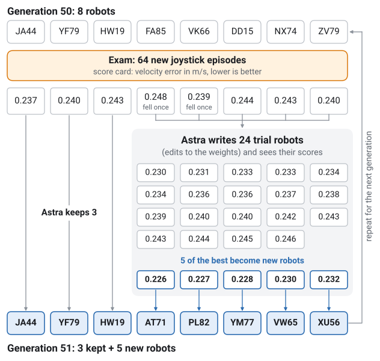
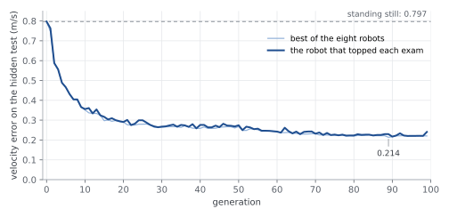
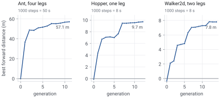
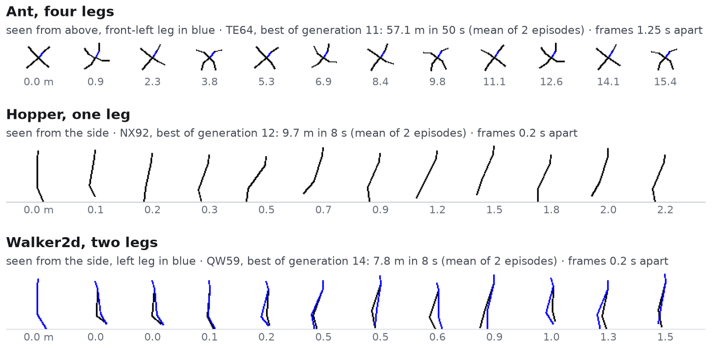

Weight-Space Programming for Robot Control
No reward, only a goal sentence. An LLM wrote every weight of a walking robot’s controller, starting from all zeros.
This post builds directly on Sparks of Weight-Space Programming by Rikiya Takehi, Jayden Teoh, Alex Zhang and Omar Khattab. They showed that a frontier LLM can read and write the weights of a neural network directly, with no optimizer in between, and they gave the idea its name. What follows is that idea run for a long time on a walking robot, with the reward taken away. Thank you to all four of them for starting it.
Introduction
Almost every way we have of getting a robot controller starts with a number to push up. Reinforcement learning maximizes a reward. Newer methods built on language models lean on a score too. FunSearch and AlphaEvolve score every program the model writes (Romera-Paredes et al., 2024; Novikov et al., 2025). Eureka and Language to Rewards have the model write a reward, and a learning algorithm then maximizes it (Ma et al., 2024; Yu et al., 2023). Someone always turns the goal into a number first.
We wanted to see what happens when nobody does. The model gets one sentence that says what the robot should do, and no reward at all. Can it still build a controller that works?
For the building we use Weight-Space Programming (Takehi et al., 2026). A language model writes a neural network’s weights directly, as plain numbers, with no training. We put it in a long loop on a real robot task.
Here is what happened. Over 100 generations, GPT-6 Astra wrote the controller of a four-legged robot, starting from all zeros. We judge the robots on a hidden test: 64 fixed joystick episodes that Astra never sees. The score is velocity error, how far the robot’s speed is from the speed the joystick asks for, on average. Lower is better, and a robot that stands still scores 0.797 m/s. Astra’s robot reached 0.250 at generation 51. From generation 72 on it stayed between 0.217 and 0.241.
The setup
The robot is a Unitree Go1 in the joystick task of MuJoCo Playground (Zakka et al., 2025), which runs on the MuJoCo simulator (Todorov et al., 2012). A joystick tells the robot to walk forward or backward, step sideways or turn, and the command changes a few times in each 20-second episode. The controller is a neural network of the usual size for this task, with 194,956 weights. Every weight starts at zero, so the first robot just stands there.
Only Astra changes the weights. It writes each change as a line such as W1[52,0] = 0.7, which sets one weight to 0.7. A small program applies the lines and runs the simulation. There are no gradients and no random changes. There is no reward either.
| Astra gets | Astra never gets |
|---|---|
| One goal sentence: “the Go1 moves as the joystick commands: forward/backward velocity vx, sideways velocity vy and turning rate wz.” | A reward, or any score to maximize |
| The task’s code, with the reward parts cut out | Which measurement matters most |
| All the weights, and a way to edit them | Gradients, or any optimizer |
| A report card for each robot: speed errors, falls, gait | The hidden test |
| Ways to look inside: traces, films, its own notes | Advice on how to work |
Click the tabs below to see real excerpts of what Astra reads and writes in one generation.
How one generation works

Each generation starts with an exam. All eight robots drive 64 new joystick episodes, and Astra gets a report card for each one. Then Astra writes up to 24 trial robots, each a few edits away from a robot it already has, and sees how they do. At the end it keeps some robots and turns its best trials into children. The next generation starts with a fresh exam.
For each generation we report the robot with the lowest error on that generation’s exam. The hidden test plays no part in picking it.
Drive the robot yourself
This is one of the best controllers from the end of the run, built in generation 90. Move the stick or press a button, and the robot moves at the speed it actually reached for that command, while the orange marker shows where a perfect follower would be.
100 generations

Figure 2 shows the whole run. The top robot started at 0.797 m/s, the score for standing still. It improved fast for about 20 generations, then stayed between 0.26 and 0.28 from generation 28 to 50. Generation 51 broke out at 0.250. From generation 72 on, every top robot scored between 0.217 and 0.241, and the best single robot of the run scored 0.214, in generation 89.
Three things Astra figured out
A trot from a clock
Some of the controller’s inputs are clocks, sine waves that tick at fixed rates. Astra’s very first edit, W1[52,0] = 0.7, wired the 2 Hz clock into the network. Its first reply opened with a plan:
I’ll test command-dependent diagonal trots at 2 Hz and 3 Hz, with three stride amplitudes and shared balance feedback.
In a trot, diagonal legs swing together. Astra’s 45 edit lines did that, and they made the stride grow with the joystick command. None of these first trots stayed up. Still, a gait was there in the numbers from the very first reply.
The body’s upward speed
The robot senses its vertical speed in its body’s own frame, which tilts with the body. When the body leans, forward motion leaks into that reading. In generation 25 Astra caught this in its notes:
input2 is TRUNK-FRAME local vz, NOT world-vertical velocity. Tilt mixes horizontal motion into it.
The true upward speed takes three multiplications, the body’s velocity against the direction of gravity, and a network unit cannot multiply. In generation 27 Astra wired twelve units, four per multiplication, whose sum comes out close to the answer. Lin, Tegmark and Rolnick (2017) use the same four-unit trick. We fed the circuit made-up inputs. It responds when the body rises, and it gives zero for a body that leans 17.5° while moving level, the case that fooled the sensor. Nothing in the goal mentions any of this. Of the 120 robots that joined from generation 28 to 52, 119 carried the circuit.
Its own rule about falling
The goal sentence never mentions falling. Astra made a rule anyway: a robot that falls even once on the exam has failed. From generation 48 on, 217 of the 222 robots that fell on an exam were gone by the next generation. Its notes read like a log:
Retired VK66 and FA85 after falls
The rule was strict. The best single robot of the run, the 0.214 robot from generation 89, fell three times on its exam, and Astra dropped it. Astra could not have known what it lost, since it never sees the hidden test.
Other bodies
We ran the same loop on three bodies from Gymnasium (Towers et al., 2024): the four-legged Ant, the one-legged Hopper and the two-legged Walker2d. Here the goal sentence was to walk forward as far as possible without falling. That sentence names the number to beat, so these runs are easier than the Go1’s. Every weight again started at zero. Within the time limit, the best Ant walked 57.1 m, the best Hopper 9.7 m and the best Walker2d 7.8 m.


Related work
FunSearch (Romera-Paredes et al., 2024) and AlphaEvolve (Novikov et al., 2025) evolve programs with an LLM writing the changes. Evolution through Large Models (Lehman et al., 2022) uses an LLM as the mutation step, and OPRO (Yang et al., 2024) has a model propose answers from a list of scored attempts. All of them give the loop a score. Eureka (Ma et al., 2024) and Language to Rewards (Yu et al., 2023) have the LLM write a reward that another method then maximizes. A separate line of work trains networks that make or read weights: HyperNetworks (Ha et al., 2017), G.pt (Peebles et al., 2022) and neural functionals (Zhou et al., 2023). We train nothing and score nothing. A general-purpose LLM writes the weights itself, as Takehi et al. (2026) describe.
Still running
This is one run with one seed. We are now running more seeds of the Go1 setup, and trying other robots with only a goal sentence. We are also letting runs go past 100 generations, and we will update this post as they finish.
References
- David Ha, Andrew Dai and Quoc V. Le. 2017. HyperNetworks. ICLR.
- Joel Lehman et al. 2022. Evolution through Large Models. arXiv:2206.08896.
- Henry W. Lin, Max Tegmark and David Rolnick. 2017. Why does deep and cheap learning work so well? Journal of Statistical Physics 168, 1223–1247.
- Yecheng Jason Ma et al. 2024. Eureka: Human-Level Reward Design via Coding Large Language Models. ICLR.
- Alexander Novikov et al. 2025. AlphaEvolve: A coding agent for scientific and algorithmic discovery. arXiv:2506.13131.
- William Peebles, Ilija Radosavovic, Tim Brooks, Alexei A. Efros and Jitendra Malik. 2022. Learning to Learn with Generative Models of Neural Network Checkpoints. arXiv:2209.12892.
- Bernardino Romera-Paredes et al. 2024. Mathematical discoveries from program search with large language models. Nature 625, 468–475.
- Rikiya Takehi, Jayden Teoh, Alex Zhang and Omar Khattab. 2026. Sparks of Weight-Space Programming: LLMs can natively read & write neural network weights. Blog post, November 2.
- Emanuel Todorov, Tom Erez and Yuval Tassa. 2012. MuJoCo: A physics engine for model-based control. IROS.
- Mark Towers et al. 2024. Gymnasium: A Standard Interface for Reinforcement Learning Environments. arXiv:2407.17032.
- Chengrun Yang et al. 2024. Large Language Models as Optimizers. ICLR.
- Wenhao Yu et al. 2023. Language to Rewards for Robotic Skill Synthesis. CoRL.
- Kevin Zakka et al. 2025. MuJoCo Playground. arXiv:2502.08844.
- Allan Zhou et al. 2023. Permutation Equivariant Neural Functionals. NeurIPS.